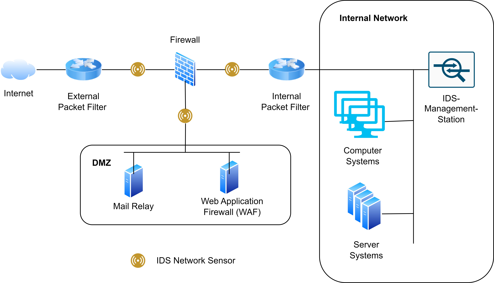
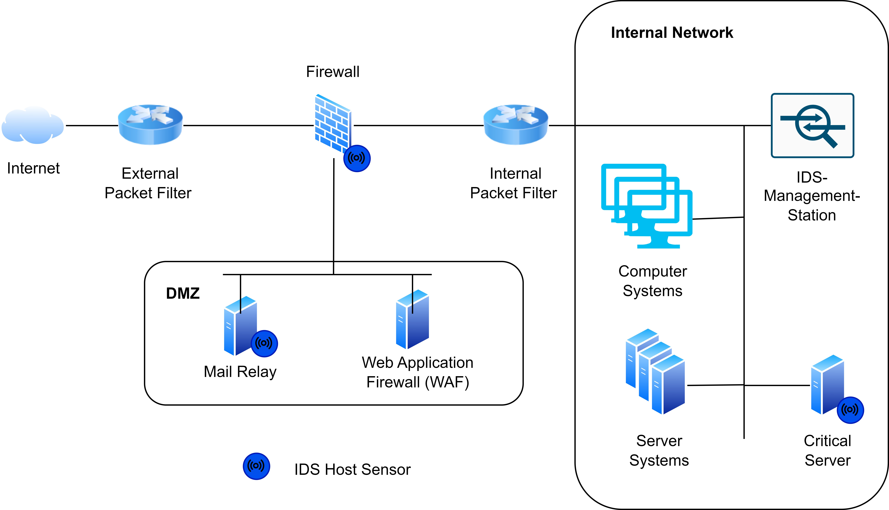
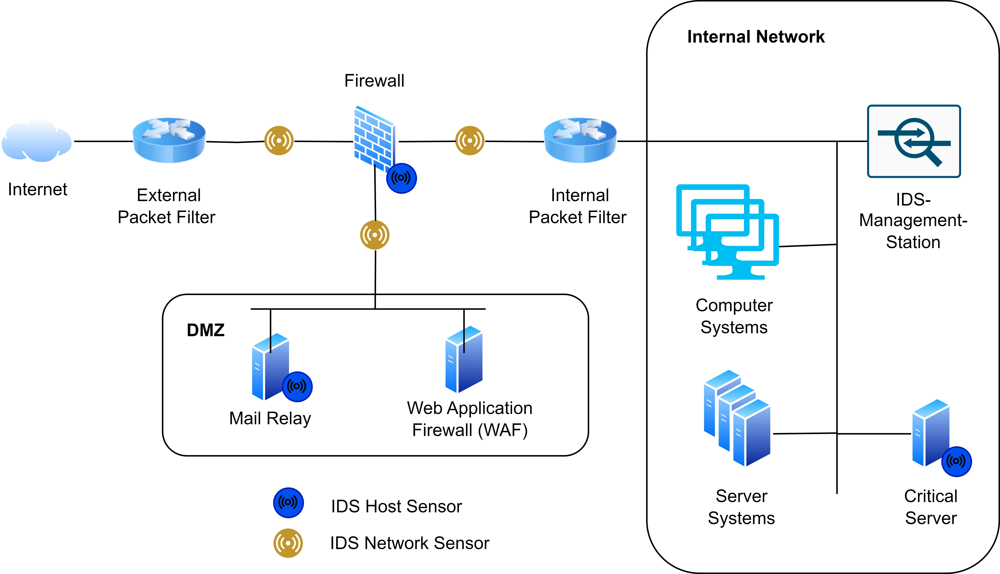
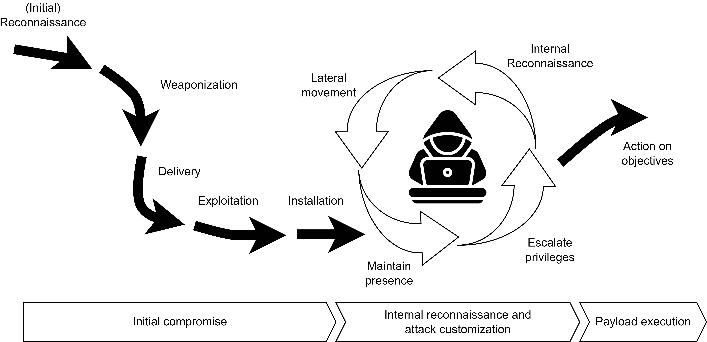
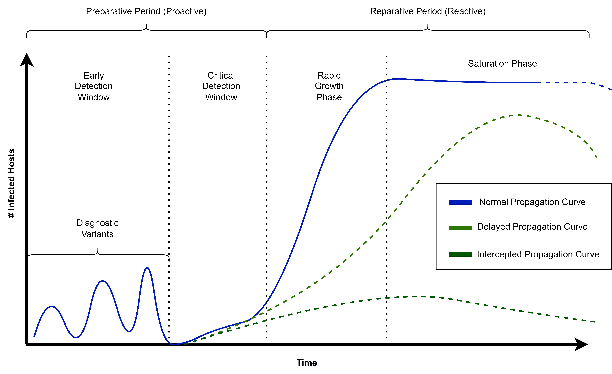

Tutorial 2.1: Intrusion Detection System


In cybersecurity, we often face the problem that we don’t have enough labeled attack data to train machine learning models for classifying network traffic. This has two main reasons:
Labeling data is costly.
Many attack patterns are unknown, not included in the training set, or related to vulnerabilities that have not yet been discovered.
In this tutorial, we’ll take a look at how to train machine learning models to detect anomalies in network data and flag these anomalies as potential attacks.
Tutorial Objectives
By the end of this tutorial, you will be able to: After completing this section, you will be able to:
Understand the role of Intrusion Detection Systems (IDS) in network security.
Differentiate between Host-Based and Network-Based IDS.
Explain how anomaly-based and signature-based detection techniques work.
Describe real-world deployment strategies of hybrid IDS setups.
Apply anomaly detection algorithms to identify new attack patterns.
What is an Intrusion Detection System?
Intrusion Detection Systems (IDS) are often divided into host-based IDS and network-based IDS according to the type of audit data and into anomaly-based and signature-based according to the analysis technique.
Classification Basis |
Type |
Description |
|---|---|---|
Source of Data |
Host-Based (HIDS) |
Monitors logs, file integrity, and system events on individual hosts. |
Network-Based (NIDS) |
Monitors network traffic and analyzes packets moving through the network. |
|
Detection Method |
Signature-Based |
Detects known attack patterns or signatures. |
Anomaly-Based |
Learns normal behavior and identifies deviations as potential intrusions. |
Host-Based Intrusion Detection System (HIDS)
A HIDS monitors the security status of individual systems or hosts. These agents, often referred to as sensors, are typically installed on nodes that are considered vulnerable to potential attacks. Since a HIDS is limited to monitoring a single host, a separate instance must be deployed on each device. It collects data about security-related events, usually provided by the operating system through audit trails. These logs contain information about the objects involved in an event, enabling the system to determine which process, program, or user may have caused a security breach.
Network-Based Intrusion Detection System (NIDS)
By examining both the structure and content of network traffic, DPI can:
Identify malicious or suspicious payloads in protocols such as HTTP, FTP, DNS, and SMTP.
Detect anomalies in packet sequences or unusual protocol usage.
Enforce security policies, such as blocking specific commands or suspicious patterns.
DPI allows NIDS to detect attacks that might bypass simple signature-based inspection, providing more granular visibility into network activity, while encrypted traffic remains limited to header and metadata analysis unless decrypted.
Placing the sensors of a pure NIDS at network transition points (such as gateways or DMZ boundaries) is a proven technique in practice:


Combining HIDS and NIDS

Anomaly Detection: Handling Rare and Diverse Attacks
In real-world network security, attacks are often rare, diverse, and unknown. Unlike normal traffic, malicious behavior may appear in small quantities and differ significantly from each other. This presents challenges for traditional signature-based detection systems, which rely on known patterns.
Anomaly detection approaches aim to learn the normal behavior of a system and flag deviations as potential attacks. These anomalies can indicate previously unseen attack types or unexpected misuse.
Types of Malicious Behavior
Some common categories of anomalous or malicious network behavior include:
Probing / Reconnaissance: Scanning networks, ports, or services to gather information about potential targets.
Unauthorized Access Attempts: Attempts to log in or gain privileges without proper authorization.
Data Exfiltration: Moving sensitive data outside the network without permission.
Denial of Service (DoS / DDoS): Overloading resources to disrupt service availability.
Malware Communication: Abnormal traffic generated by infected hosts communicating with command-and-control servers.
Payload Attacks: Injection of malicious content, such as SQL injection, XSS, or buffer overflows.
Configuration Exploits: Attempts to exploit misconfigurations, weak permissions, or default credentials.
Policy Violations: Actions that do not follow the normal behavior of users or applications, e.g., uploading unexpected file types or sending unusually large requests.
By detecting these anomalous behaviors, anomaly-based IDS can complement signature-based systems, helping identify both known and previously unseen threats.
Intruder Behaviour Patterns
Intruders can be divided into three groups:
Hackers: They hack into computers for the thrill.
Criminals: A criminal has a specific target in mind.
Insider Attacks: Insiders can be motivated by revenge or money. They are challenging to detect and have valuable knowledge and access to the systems or to the company network.
State actors: This group has considerable human and financial resources and often pursues geostrategic and military objectives through cyber espionage, disinformation campaigns,and cyber-attacks.
The Cyber Kill Chain
Lockheed Martin’s Cyber Kill Chain© framework outlines attacker behavior and detection opportunities:
Reconnaissance: Identifying targets and exposed internet-facing servers.
Weaponization: Coupling malware with an exploit to create a deliverable.
Delivery: Sending malware to the target (e.g., email, web, USB).
Exploitation: Triggering the exploit to gain access; unknown exploits are “zero-day” attacks.
Installation: Deploying persistent backdoors to maintain long-term access.
Command and Control (C2): Remote management of compromised systems.
Actions on Objectives: Internal reconnaissance, lateral movement, and data exfiltration.

Advanced Targeted Attacks (ATA) and Advanced Persistent Threats (APT)
Definition – Advanced Targeted Attack (ATA):An ATA is a deliberate, goal-oriented operation against a specific organization, system, or individual.ATAs are custom-tailored to exploit particular vulnerabilities and often combine multiple techniques such as reconnaissance, privilege escalation, and data exfiltration. Their behavior can often be modeled using an Attack Graph (AG), which represents the logical sequence of steps and dependencies an attacker may follow to achieve a goal.Attack Graphs help visualize how multiple vulnerabilities and system states can be chained together in complex attack paths, supporting the identification of potential weak points and early detection opportunities.
Definition – Advanced Persistent Threat (APT):An APT is a long-term, sophisticated intrusion in which attackers establish and maintain unauthorized access within a network over an extended period.APT actors use advanced concealment techniques, such as rootkits, fileless malware, and living-off-the-land tactics, along with social engineering and custom-built malware, to remain hidden while continuously gathering intelligence or exfiltrating sensitive information.
The Importance of Early Detection
The figure below illustrates different worm propagation curves and the importance of the detection window:
Early Detection Window: The ideal phase for identifying and containing a threat. At this point, only diagnostic variants (initial infections or early forms of the worm) are active, and containment is highly effective.
Critical Detection Window: A short time before exponential growth, where delayed detection still prevents total network compromise but requires more intensive mitigation.
Rapid Growth Phase: The worm spreads quickly across the network, making containment difficult and costly.
Saturation Phase: The attack reaches its peak; most vulnerable systems are compromised.
The three curves represent how detection timing affects propagation:
Normal Propagation Curve: Represents uncontrolled worm spread without early detection.
Delayed Propagation Curve: Detection occurs later, slowing but not fully stopping the infection.
Intercepted Propagation Curve: Early detection effectively halts the spread before reaching the critical growth phase.

In practice, IDS that identify anomalies during the early detection window play a vital role in preventing outbreaks before they can escalate.
ML-Based Anomaly Detection
In Tutorial 1, we trained Machine Learning (ML) classifiers using supervised learning techniques.
Definition – Supervised LearningIn a supervised learning problem, the task T is to learn a mapping \(f: X \rightarrow Y\) from inputs \(x \in X\) to outputs \(y \in Y\), where:
\(x\): the input, also called features
\(y\): the output, also called the label or response The experience E is provided in the form of an N-dimensional training set of input–output pairs: \(D = \{(x_n, y_n)\}_{n=1}^N\)
The performance measure P depends on the type of output. For many problems, the Mean Squared Error (MSE) is commonly used as the performance metric.
We also explored pattern identification using unsupervised ML techniques.
Definition – Unsupervised Learning:Unsupervised learning attempts to make sense of data without predefined labels.Only the inputs\(D = \{x_n : n = 1, \ldots, N\}\)are considered, without the corresponding outputs \(y_n\).
From a probabilistic perspective, unsupervised learning can be viewed as fitting an unconditional model of the form \(p(x)\). This model describes the data distribution and can be used to generate new data \(x\) or to detect anomalies by identifying observations that deviate from the learned normal pattern.
Application in Cybersecurity
In cybersecurity, supervised ML methods are useful when labeled datasets are available — for example, for:
Malware classification
Spam detection
Intrusion detection with labeled attack data
Network traffic analysis
Anomaly detection
Digital forensics
Threat hunting
By using unsupervised learning methods to identify patterns in data (as explored in Tutorial 1), analysts often had to manually interpret the discovered clusters or structures to spot abnormal behavior.
Isolation Forest
To illustrate the advantage of anomaly detection algorithms for IDS, we’re working again with the KDDCUP99 dataset, which you are familiar with from Tutorial 1.
In this example, we’ll use an Isolation Forest, a data anomaly detection algorithm based on binary trees. It has linear time complexity and low memory usage, which makes it suitable for high-volume anomaly detection, such as in network traffic to detect potential cyber attacks. The algorithm is based on the assumption that anomalies (in our case, cyber attacks) are few and different from normal data, so they can be isolated using few partitions.
Mathematical Idea: Isolation Forest isolates points by recursively partitioning the data using random splits. For a dataset of \(n\) points \(\{x_1, ..., x_n\}\), the path length \(h(x)\) of a point \(x\) is the number of edges traversed from the root of a tree until \(x\) is isolated in a leaf node.
An estimate of the anomaly score for a given instance \(x\) is:
where:
\(h(x)\): path length of \(x\) in a single tree.
\(E(h(x))\): average path length of \(x\) across all trees in the forest.
\(c(n)\): normalization factor, the expected path length of a point in a tree of size \(n\), defined piecewise as:
\(H(i)\): the \(i\)-th harmonic number, \(H(i) = 1 + \frac12 + \frac13 + \dots + \frac{1}{i}\).
\(n\): the number of points in the subsample used to build each tree.
Intuition:
The normalization by \(c(n)\) ensures the anomaly score is independent of tree size.
The harmonic number appears because \(c(n)\) represents the expected path length of a point in a random binary search tree; it grows roughly like \(\ln(n)\) for large \(n\) and provides a reference for “normal” path lengths.
Anomalies are isolated in shorter paths, so they get higher scores.
Normal points take longer to isolate, giving lower scores.
Notes:
Isolation Forest isolates anomalies instead of modeling normal points.
Trees are built using random feature splits on random subsamples.
Higher scores (\(s(x, n) \to 1\)) indicate likely outliers.
Requires specifying the number of trees and subsample size.
We start by loading the required libraries for this lab:
[92]:
### Importing required libraries
import pandas as pd
import numpy as np
import matplotlib.pyplot as plt
import seaborn as sns
from sklearn import datasets
from sklearn.model_selection import train_test_split
from sklearn.metrics import confusion_matrix
from sklearn.ensemble import IsolationForest
from sklearn.svm import OneClassSVM
from sklearn.covariance import EllipticEnvelope
from sklearn.decomposition import PCA
from sklearn.metrics import confusion_matrix, accuracy_score
from sklearn.utils import resample
First, we’ll load the SA subset of the KDDCUP99 dataset to keep computation manageable. Then we’ll explore and visualize the data.
[93]:
# ### Step 1: Load and Explore the KDDCUP99 Dataset
X, y = datasets.fetch_kddcup99(
subset="SA", # Use the 'SA' subset (smaller sample)
percent10=True, # Use 10% of the full dataset for efficiency
random_state=42, # Ensure reproducibility
return_X_y=True, # Return data and labels separately
as_frame=True # Load as pandas DataFrame
)
# Convert binary label: 1 = attack, 0 = normal
y = (y != b"normal.").astype(np.int32)
# Take only 10% of the data for quick demonstration
X, _, y, _ = train_test_split(X, y, train_size=0.1, stratify=y, random_state=42)
# Display dataset stats
n_samples, anomaly_frac = X.shape[0], y.mean()
print(f"{n_samples} datapoints with {y.sum()} anomalies ({anomaly_frac:.02%})")
# Plot label distribution
plt.hist(y, bins=[-0.5, 0.5, 1.5], edgecolor='black')
plt.xticks([0, 1], ['Normal', 'Attack'])
plt.title('Histogram of Labels')
plt.xlabel('Label')
plt.ylabel('Frequency')
plt.show()
10065 datapoints with 338 anomalies (3.36%)
Notes:
The histogram provides a visual overview of class imbalance in the dataset. In the KDDCUP99 subset, normal traffic far outnumbers attack events.
This imbalance is typical in cybersecurity datasets, reflecting real-world conditions where attacks are rare relative to benign activity.
From a theoretical perspective, Intrusion Detection Systems (IDS) face two main challenges in such imbalanced environments:
Scarcity of labeled attack data: Many attack patterns are unknown, costly to label, or represent vulnerabilities not yet exploited.
Diversity of attack types: Attacks can range from common automated probes to sophisticated Advanced Persistent Threats (APT) and Advanced Targeted Attacks (ATA), which occur rarely and blend into normal traffic.
Therefore, the observed class imbalance in the histogram justifies the use of unsupervised anomaly detection models (such as Isolation Forest), which do not rely on balanced labeled datasets but exploit the intrinsic structure of the data to detect deviations.
Before training, categorical (non-numeric) features must be converted into numerical form. We’ll use one-hot encoding with pandas.get_dummies().
[94]:
# Convert categorical variables to numerical format
X = pd.get_dummies(X)
print(f"Feature matrix shape after encoding: {X.shape}")
X.head()
Feature matrix shape after encoding: (10065, 6536)
[94]:
| duration_0 | duration_1 | duration_2 | duration_3 | duration_4 | duration_5 | duration_6 | duration_7 | duration_8 | duration_9 | ... | dst_host_srv_rerror_rate_0.91 | dst_host_srv_rerror_rate_0.92 | dst_host_srv_rerror_rate_0.93 | dst_host_srv_rerror_rate_0.94 | dst_host_srv_rerror_rate_0.95 | dst_host_srv_rerror_rate_0.96 | dst_host_srv_rerror_rate_0.97 | dst_host_srv_rerror_rate_0.98 | dst_host_srv_rerror_rate_0.99 | dst_host_srv_rerror_rate_1.0 | |
|---|---|---|---|---|---|---|---|---|---|---|---|---|---|---|---|---|---|---|---|---|---|
| 26890 | True | False | False | False | False | False | False | False | False | False | ... | False | False | False | False | False | False | False | False | False | False |
| 35471 | False | True | False | False | False | False | False | False | False | False | ... | False | False | False | False | False | False | False | False | False | False |
| 37027 | True | False | False | False | False | False | False | False | False | False | ... | False | False | False | False | False | False | False | False | False | False |
| 80164 | False | False | False | False | False | False | False | False | False | False | ... | False | False | False | False | False | False | False | False | False | False |
| 73649 | True | False | False | False | False | False | False | False | False | False | ... | False | False | False | False | False | False | False | False | False | False |
5 rows × 6536 columns
Notes:
Many columns in KDDCUP99 are categorical (e.g., protocol type, service, flag).
One-hot encoding converts these categories into binary vectors, making them compatible with ML models.
Step 3: Train-Test Split
We split the dataset into training (80%) and testing (20%) subsets.
[95]:
X_train, X_test, y_train, y_test = train_test_split(
X, y,
test_size=0.2,
random_state=42
)
# Keep only normal samples in the training set
X_train = X_train[y_train == 0]
print(f"Training only on normal points: {len(X_train)} samples")
print("Testing samples:", len(X_test))
Training only on normal points: 7784 samples
Testing samples: 2013
Step 4: Model Training – Isolation Forest
[96]:
# Train Isolation Forest for anomaly detection
clf = IsolationForest(contamination=0.04, random_state=42, n_estimators=200, max_samples='auto', bootstrap=True)
clf.fit(X_train)
[96]:
IsolationForest(bootstrap=True, contamination=0.04, n_estimators=200,
random_state=42)In a Jupyter environment, please rerun this cell to show the HTML representation or trust the notebook. On GitHub, the HTML representation is unable to render, please try loading this page with nbviewer.org.
Parameters
| n_estimators | 200 | |
| max_samples | 'auto' | |
| contamination | 0.04 | |
| max_features | 1.0 | |
| bootstrap | True | |
| n_jobs | None | |
| random_state | 42 | |
| verbose | 0 | |
| warm_start | False |
Notes:
contaminationspecifies the expected proportion of anomalies in the dataset. Here,0.04means the model assumes roughly 4% of the data are anomalous.n_estimatorscontrols the number of trees in the forest; more trees improve stability but increase computation.max_samples='auto'lets the algorithm use all training samples for each tree (or a default value if too large).bootstrap=Trueenables sampling with replacement when building trees, which can improve robustness.
Step 5: Visualize the Decision Boundary (2D PCA)
[97]:
# Reduce features to 2D for visualization
pca = PCA(n_components=2, random_state=42)
X_train_2d = pca.fit_transform(X_train)
# Retrain Isolation Forest on 2D data
clf_2d = IsolationForest(contamination=0.1, random_state=42)
clf_2d.fit(X_train_2d)
# Create a meshgrid for plotting
xx, yy = np.meshgrid(
np.linspace(X_train_2d[:,0].min()-1, X_train_2d[:,0].max()+1, 150),
np.linspace(X_train_2d[:,1].min()-1, X_train_2d[:,1].max()+1, 150)
)
Z = clf_2d.predict(np.c_[xx.ravel(), yy.ravel()])
Z = Z.reshape(xx.shape)
# Plot decision boundary
plt.figure(figsize=(8,6))
plt.contour(xx, yy, Z, levels=[0], linewidths=2, colors='black')
# Plot training points
y_pred_train = clf_2d.predict(X_train_2d)
colors = np.array(["#377eb8", "#ff7f00"]) # Blue: normal, Orange: anomaly
plt.scatter(X_train_2d[:,0], X_train_2d[:,1], s=10, color=colors[(y_pred_train + 1)//2])
plt.title("Isolation Forest Decision Boundary (Training Data, 2D PCA)")
plt.xlabel("PCA Component 1")
plt.ylabel("PCA Component 2")
plt.show()
Notes:
PCA reduces features to 2D for visualization only.
Contour line shows boundary between normal points and anomalies.
Blue points are considered normal, orange are predicted anomalies.
Step 6: Make Predictions and Evaluate the Model
[98]:
# Predict outliers in the test set
y_pred = clf.predict(X_test)
# Convert predictions to binary format (0 = normal, 1 = anomaly)
# The isolation forest outputs -1 for anomalies and 1 for normal points
y_pred_binary = [1 if pred == -1 else 0 for pred in y_pred]
# Generate confusion matrix
cm = confusion_matrix(y_test, y_pred_binary)
# Plot heatmap
plt.figure(figsize=(8,6))
sns.heatmap(cm, annot=True, fmt='d', cmap='Blues')
plt.title('Confusion Matrix')
plt.xlabel('Predicted')
plt.ylabel('Actual')
plt.show()
# Compute accuracy
acc = accuracy_score(y_test, y_pred_binary)
print(f"Accuracy: {acc:.2%}")
Accuracy: 93.19%
Notes:
The confusion matrix shows true positives, false positives, true negatives, and false negatives.
A perfect model would have all predictions along the diagonal.
Since this is an anomaly detection model, some misclassifications are expected.
Robust Covariance
While Isolation Forest isolates anomalies without assuming a particular data distribution, another approach is to explicitly model the structure of normal data and detect points that deviate from it. For this, we continue working with the KDDCUP99 dataset.
In this example, we’ll use Robust Covariance estimation, specifically the EllipticEnvelope method. This approach models the central location and covariance of the data assuming a Gaussian distribution, but it is robust to outliers, making it suitable for detecting rare anomalies in network traffic. The parameter contamination allows specifying the expected proportion of outliers, helping the algorithm distinguish normal behavior from anomalies.
What is Robust Covariance?
Robust Covariance estimates the mean and covariance of a dataset in a way that is resistant to outliers. Unlike classical covariance, which can be heavily influenced by extreme values, robust covariance captures the “core structure” of the data, representing where most points lie. This is particularly useful in anomaly detection, where outliers should not distort the model of normal behavior.
Why is it called EllipticEnvelope?
The method is called EllipticEnvelope because it effectively fits an elliptical boundary around the bulk of the data in feature space:
If the data were perfectly Gaussian, the contour of constant Mahalanobis distance would form an ellipse (or ellipsoid in higher dimensions).
The algorithm estimates a robust mean and covariance matrix, then considers the ellipse that contains most of the data as the “normal region.”
Points outside this ellipse are flagged as anomalies.
In short: EllipticEnvelope = robust estimation of an elliptical region that encloses normal points. It is “robust” because extreme points (outliers) do not pull the ellipse away from the core data.
Mathematical Idea
EllipticEnvelope computes the Mahalanobis distance for each point (x):
\(x\): a data point
\(\mu\): estimated robust mean
\(\Sigma\): estimated robust covariance
Points with a Mahalanobis distance above a threshold derived from the contamination fraction are considered anomalies.
Intuition
Robust covariance ensures the mean and covariance estimates are not overly influenced by outliers.
Points far from the “elliptical envelope” formed by the bulk of the data are flagged as outliers.
Useful when normal data roughly follows a Gaussian distribution but occasional anomalies occur.
Notes
Requires specifying
contamination, the expected fraction of outliers.Random state can be set for reproducibility.
Works best for moderate-dimensional data and assumes roughly elliptical clusters for normal data.
We start by loading the required libraries for this example:
Step 1: Model Training – EllipticEnvelope
[99]:
# Subsample 10000 points
X_train_sub = resample(X_train, n_samples=10000, random_state=42)
# Apply PCA to reduce to 10 dimensions for better performance -> EllipticEnvelope is computationally expensive
X_train_sub_pca = PCA(n_components=10).fit_transform(X_train_sub)
# Train EllipticEnvelope for anomaly detection
outliers_fraction = 0.04 # expected fraction of anomalies
clf = EllipticEnvelope(contamination=outliers_fraction, random_state=42)
clf.fit(X_train_sub_pca)
[99]:
EllipticEnvelope(contamination=0.04, random_state=42)In a Jupyter environment, please rerun this cell to show the HTML representation or trust the notebook.
On GitHub, the HTML representation is unable to render, please try loading this page with nbviewer.org.
Parameters
| store_precision | True | |
| assume_centered | False | |
| support_fraction | None | |
| contamination | 0.04 | |
| random_state | 42 |
Notes:
contaminationspecifies the expected proportion of outliers.Robust covariance ensures the estimated ellipse is not distorted by extreme points.
Points outside the elliptical envelope are flagged as anomalies.
Step 2: Visualize the Decision Boundary (2D PCA)
We reduce features to 2D using PCA and visualize the elliptical boundary.
[100]:
# Reduce features to 2D for visualization
pca = PCA(n_components=2, random_state=42)
X_train_2d = pca.fit_transform(X_train_sub)
# Retrain EllipticEnvelope on 2D data
clf_2d = EllipticEnvelope(contamination=outliers_fraction, random_state=42)
clf_2d.fit(X_train_2d)
# Create a meshgrid for plotting (zoomed out)
buffer_x = 5 # increase to zoom out more
buffer_y = 15 # increase to zoom out more
xx, yy = np.meshgrid(
np.linspace(X_train_2d[:,0].min()-buffer_x, X_train_2d[:,0].max()+buffer_x, 300),
np.linspace(X_train_2d[:,1].min()-buffer_y, X_train_2d[:,1].max()+buffer_y, 300)
)
Z = clf_2d.predict(np.c_[xx.ravel(), yy.ravel()])
Z = Z.reshape(xx.shape)
# Plot decision boundary
plt.figure(figsize=(8,6))
plt.contour(xx, yy, Z, levels=[0], linewidths=2, colors='black')
# Plot training points
y_pred_train = clf_2d.predict(X_train_2d)
colors = np.array(["#377eb8", "#ff7f00"]) # Blue: normal, Orange: anomaly
plt.scatter(X_train_2d[:,0], X_train_2d[:,1], s=10, color=colors[(y_pred_train + 1)//2])
# Set axis limits to match meshgrid
plt.xlim(xx.min(), xx.max())
plt.ylim(yy.min(), yy.max())
plt.title("EllipticEnvelope Decision Boundary (Training Data, 2D PCA)")
plt.xlabel("PCA Component 1")
plt.ylabel("PCA Component 2")
plt.show()
Notes:
PCA reduces features to 2D for visualization only.
The contour line shows the boundary of the elliptical envelope.
Blue points are considered normal, orange points are predicted anomalies.
Step 3: Make Predictions and Evaluate the Model
We predict outliers on the test set and evaluate performance.
[101]:
# Predict outliers in the test set
X_test_pca = PCA(n_components=10).fit_transform(X_test)
y_pred = clf.predict(X_test_pca)
# Convert predictions to binary format (0 = normal, 1 = anomaly)
# EllipticEnvelope outputs -1 for anomalies and 1 for normal points
y_pred_binary = [1 if pred == -1 else 0 for pred in y_pred]
# Generate confusion matrix
cm = confusion_matrix(y_test, y_pred_binary)
# Plot heatmap
plt.figure(figsize=(8,6))
sns.heatmap(cm, annot=True, fmt='d', cmap='Blues')
plt.title('Confusion Matrix')
plt.xlabel('Predicted')
plt.ylabel('Actual')
plt.show()
# Compute accuracy
acc = accuracy_score(y_test, y_pred_binary)
print(f"Accuracy: {acc:.2%}")
Accuracy: 93.39%
Notes:
The confusion matrix shows true positives, false positives, true negatives, and false negatives.
Some misclassifications are expected because anomalies are rare and sometimes overlap with normal data.
PCA visualization helps see how normal and anomalous points are separated by the elliptical boundary.
Points are colored by prediction: normal (blue) and attack (orange).
One-Class SVM
In this example, we’ll continue working with the KDDCUP99 dataset.
subject to:
where:
\(\phi(x_i)\): the feature mapping of \(x_i\) into the kernel space
\(\mathbf{w}\): normal vector defining the decision boundary
\(\rho\): offset controlling the boundary
\(\xi_i\): slack variables allowing some points to lie outside the boundary
\(\nu \in (0,1]\): upper bound on the fraction of anomalies and lower bound on the fraction of support vectors
Intuition:
One-Class SVM tries to enclose the majority of normal points while leaving anomalies outside the learned boundary.
The kernel function (e.g., RBF) allows the boundary to be non-linear, capturing complex patterns.
The parameter \(\nu\) roughly controls the expected fraction of outliers.
Notes:
Unlike EllipticEnvelope, One-Class SVM does not assume Gaussianity.
Can handle high-dimensional and non-linearly separable data.
Points outside the learned boundary are flagged as anomalies.
Requires specifying the kernel type and the \(\nu\) parameter.
We start by loading the required libraries for this lab:
Step 4: Model Training – One-Class SVM
[102]:
# Train One-Class SVM for anomaly detection
clf = OneClassSVM(kernel='rbf', nu=0.04, gamma='scale')
clf.fit(X_train)
[102]:
OneClassSVM(nu=0.04)In a Jupyter environment, please rerun this cell to show the HTML representation or trust the notebook.
On GitHub, the HTML representation is unable to render, please try loading this page with nbviewer.org.
Parameters
| kernel | 'rbf' | |
| degree | 3 | |
| gamma | 'scale' | |
| coef0 | 0.0 | |
| tol | 0.001 | |
| nu | 0.04 | |
| shrinking | True | |
| cache_size | 200 | |
| verbose | False | |
| max_iter | -1 |
Notes:
nuis an upper bound on the fraction of anomalies and a lower bound on the fraction of support vectors.kernelspecifies the function used to map data into a higher-dimensional space; RBF allows non-linear boundaries.Points outside the learned boundary are flagged as anomalies.
Step 5: Visualize the Decision Boundary (2D PCA)
We reduce features to 2D using PCA and visualize the boundary learned by One-Class SVM.
[103]:
# Reduce features to 2D for visualization
pca = PCA(n_components=2, random_state=42)
X_train_2d = pca.fit_transform(X_train)
# Retrain One-Class SVM on 2D data
clf_2d = OneClassSVM(kernel='rbf', nu=0.1, gamma='scale')
clf_2d.fit(X_train_2d)
# Create a meshgrid for plotting
xx, yy = np.meshgrid(
np.linspace(X_train_2d[:,0].min()-1, X_train_2d[:,0].max()+1, 150),
np.linspace(X_train_2d[:,1].min()-1, X_train_2d[:,1].max()+1, 150)
)
Z = clf_2d.predict(np.c_[xx.ravel(), yy.ravel()])
Z = Z.reshape(xx.shape)
# Plot decision boundary
plt.figure(figsize=(8,6))
plt.contour(xx, yy, Z, levels=[0], linewidths=2, colors='black')
# Plot training points
y_pred_train = clf_2d.predict(X_train_2d)
colors = np.array(["#377eb8", "#ff7f00"]) # Blue: normal, Orange: anomaly
plt.scatter(X_train_2d[:,0], X_train_2d[:,1], s=10, color=colors[(y_pred_train + 1)//2])
plt.title("One-Class SVM Decision Boundary (Training Data, 2D PCA)")
plt.xlabel("PCA Component 1")
plt.ylabel("PCA Component 2")
plt.show()
Notes:
PCA reduces features to 2D for visualization only.
The contour line shows the boundary separating normal points from anomalies.
Blue points are predicted normal, orange points are predicted anomalies.
Step 3: Make Predictions and Evaluate the Model
We predict outliers on the test set and evaluate performance.
[104]:
# Predict outliers in the test set
y_pred = clf.predict(X_test)
# Convert predictions to binary format (0 = normal, 1 = anomaly)
# One-Class SVM outputs -1 for anomalies and 1 for normal points
y_pred_binary = [1 if pred == -1 else 0 for pred in y_pred]
# Generate confusion matrix
cm = confusion_matrix(y_test, y_pred_binary)
# Plot heatmap
plt.figure(figsize=(8,6))
sns.heatmap(cm, annot=True, fmt='d', cmap='Blues')
plt.title('Confusion Matrix')
plt.xlabel('Predicted')
plt.ylabel('Actual')
plt.show()
# Compute accuracy
acc = accuracy_score(y_test, y_pred_binary)
print(f"Accuracy: {acc:.2%}")

Accuracy: 93.14%
Notes:
The confusion matrix shows true positives, false positives, true negatives, and false negatives.
Some misclassifications are expected because anomalies may overlap with normal data.
PCA visualization helps see how the non-linear boundary separates normal and anomalous points.
Points are colored by prediction: normal (blue) and attack (orange).
Exercises – Anomaly Detection with KDDCUP99
In this exercise, we’ll learn how to compare, implement, and evaluate different anomaly detection algorithms for cybersecurity using the KDDCUP99 dataset. We’ll focus on Isolation Forest, EllipticEnvelope (Robust Covariance), One-Class SVM, and Local Outlier Factor (LOF).
Exercise 1: Compare Decision Boundaries Between Anomaly Detection Algorithms
Objective: Understand how different algorithms separate normal points from anomalies.
Tasks:
Compare the shapes and coverage of the decision boundaries in the examples above:
Which algorithm produces linear vs. non-linear boundaries?
Which boundaries are tight around the normal points and which are more spread out?
Theory Questions:
Explain why the Isolation Forest boundary might look irregular compared to EllipticEnvelope.
Why does One-Class SVM often capture complex non-linear patterns better than Robust Covariance?
How does the assumption about data distribution influence the boundary shape for each algorithm?
Exercise 2: Runtime Complexity
Objective: Compare the computational efficiency of different anomaly detection algorithms.
Tasks:
Measure the execution time of training and prediction for:
Isolation Forest
EllipticEnvelope
One-Class SVM Use the Python
timemodule or%timeitmagic in Jupyter. Implement this directly in the code sections of the examples above.
Discuss:
Which algorithm is fastest during training? During testing? Explain why.
Exercise 3: Implement Local Outlier Factor (LOF) for Anomaly Detection
Objective: Apply a density-based anomaly detection algorithm to network traffic data.
Resources:
[105]:
# Tasks:
# 1. Load and preprocess the KDDCUP99 dataset as in the examples.
# 2. Train a LocalOutlierFactor model using only normal points.
# 3. Predict anomalies on the test set.
# 4. Visualize the decision boundary using 2D PCA.
# 5. Visualize the results a confusion matrix.
# 6. Compare the LOF results with those obtained from:
# - Isolation Forest
# - EllipticEnvelope
# - One-Class SVM
# 6. Theory Questions:
# - How does LOF differ from Isolation Forest in identifying anomalies?
# - Why is LOF considered a density-based method rather than a boundary-based method?
# - What are the strengths and limitations of LOF for intrusion detection in cybersecurity?
Conclusion
In this tutorial, we explored how classic machine learning techniques can be used to detect anomalies in network traffic, a critical task in cybersecurity where labeled attack data are scarce. By applying algorithms such as Isolation Forest, EllipticEnvelope, One-Class SVM, and Local Outlier Factor to the KDDCUP99 dataset, we gained practical insights into how different models identify unusual behavior in network data.
Isolation Forest efficiently isolates anomalies without explicitly modeling normal data, making it well-suited for high-volume traffic where attacks are rare and diverse. EllipticEnvelope, on the other hand, constructs a robust statistical representation of normal behavior and flags deviations as potential threats. However, it is computationally expensive, particularly in high-dimensional datasets, which can limit scalability. One-Class SVM demonstrates the power of non-linear boundaries in high-dimensional feature spaces, capturing complex patterns that other methods may overlook. LOF, as a density-based method, emphasizes local context by identifying points that deviate from the density of their immediate neighborhood rather than from a global model of normality.
Through visualization, evaluation, and runtime analysis, we observed how algorithmic assumptions impact both detection performance and computational feasibility. Anomaly detection provides insight into previously unseen or evolving cyber threats, enabling early intervention and complementing traditional signature-based systems. This tutorial illustrates that a deep understanding of both the data and the strengths and limitations of different algorithms is essential for designing robust intrusion detection strategies that proactively anticipate attacks rather than merely reacting to them.
For practical implementation of ML-based anomaly detection methods, we must ask critical questions: How often do zero-day attacks occur that cannot be captured by signature-based systems? What is the volume of network traffic, and which algorithm can handle this amount of data efficiently? What is the cost of false positives to the organization? What is the cost of false negatives? How can we handle this balance?
 If you found this tutorial helpful, please ⭐ star our repository to show your support.
If you found this tutorial helpful, please ⭐ star our repository to show your support. For any questions, typos, or bugs, kindly open an issue on GitHub — we appreciate your feedback!
For any questions, typos, or bugs, kindly open an issue on GitHub — we appreciate your feedback!